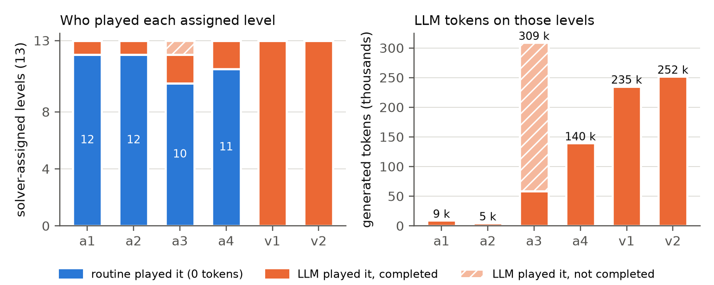
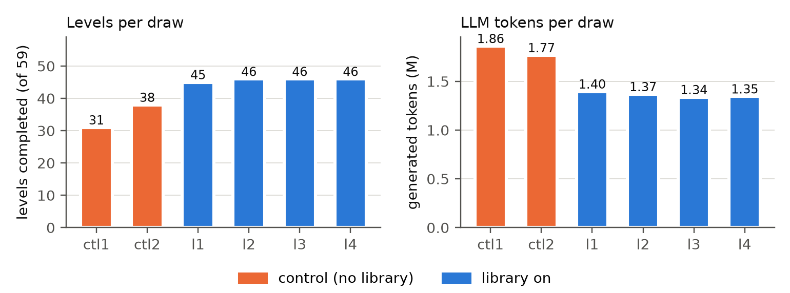
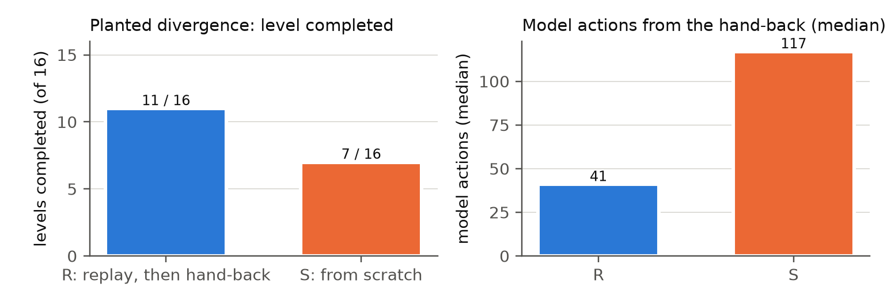

ARC-AGI-3のLLMエージェントにおける実行契約と停止記録による診断
一度解けた課題を、次回も確実かつ低コストで実行するには何が必要か。本研究では、LLMエージェントが得た成功を実行可能な手順として保持し、その手順が適用できなくなった場合に推論へ戻る仕組みを扱う。
本研究の対照エージェントには、ある実行で得た成功を、次の実行で直接利用できる手順として残す経路がない。同じ設定の2実行で、公開8ゲームのクリア数は31と38だった。収集した83実行では計45レベルに一度以上成功しているが、1実行あたりの平均は33.3である。内蔵ソルバー（3.3節）を無効にすると、ソルバーが担当する13レベルに、LLMは1実行あたり36〜51万トークンを使い、それでも一部をクリアできなかった。行動履歴を参照できても、過去の成功がそのまま実行能力として使われるわけではない。
成功した手順を保存すれば、同じ課題を解き直す費用を抑えられる。ただし、過去の手順が現在の状況にも適用できるとは限らない。盤面が同じでも内部状態が異なる場合や、実行途中で予測と異なる変化が起きる場合がある。再利用には、開始時の適用判定に加え、実行結果の監視と、不一致を検出した場合の停止が必要になる。
ECAは、この処理をLLMと環境の間で担うミドルウェアである。名称のExistentialは、技能が行動する権限の根拠を指す。その根拠は、推論ではなく、環境で実際に観測し検証した遷移（3節の証拠E）に限る。成功軌跡の再生と、ゲーム規則を表すモデル（以下「型」）に、共通の実行契約を適用する。技能は所定の条件を満たした場合に実行権限を得る。各行動の結果を予測と照合し、最初の不一致で権限を取り消してLLMへ制御を返す。契約が保証するのは、不一致を観測した後にその技能の自動実行を継続しないことであり、誤り自体の防止ではない。
この役割分担は、熟練した行動の自動性と監督制御を参考にしている。自転車の運転では、慣れた動作を逐一検討する場合と、予想外の状況に対処する場合を区別できる。関連する概念として、事例の想起による自動性（Logan, 1988）、運動スキーマ（Schmidt, 1975）、新規状況や誤りへの監督制御（Norman & Shallice, 1986）、動作結果の順モデル（Wolpert et al., 1995）、信頼性に応じた習慣と熟慮の調停（Daw et al., 2005）がある。これらは設計を説明するための類比であり、人間の運動学習を再現したという主張ではない。本研究はフィジカルAIのミドルウェアとして始まり、まず離散的なゲーム環境で実行制御を評価した。
評価は2つに分ける。既知の公開ゲームでは、成功手順の保存と再利用、実行費用、逸脱後の引き継ぎを測る。未見ゲームでは、既存技能の適用範囲を測る。後者にはKaggleの非公開評価とは別のゲーム集も用いる（2節、5.6節）。本稿の貢献は次の3点である。
LLMを呼ばない再生と逸脱時の引き継ぎは、GUIエージェントにも先行例がある（4節）。認知科学との類比そのものを新規性とはせず、共通の実行契約と、その費用・適用範囲の測定を本稿の対象とする。
型は、評価の前に公開ゲームを基に事前実装したもので、提出したカーネルのソルバーとして用いた。本稿は型を獲得する方法を提案せず、型が汎化するとも主張しない（未見ゲームでのクリアは0件、5.6節）。本稿では型を固定の技能源として用い、実行契約そのもの、すなわち同じ計画に対する権限と助言の違い、不一致時の取消し、LLMへの引き継ぎを測る。LLMがモデルを書く場合に何が変わるか、停止後の修復を含めて5.7節で扱う。
ARC-AGI-3。ARC Prize Foundation（2026）の対話型ゲーム集であり、16色・64×64の盤面に対して、キー入力に相当する行動、クリック、RESETを実行する。各ゲームには複数のレベルがあり、人間の基準手数に対して採点される。非公開評価では、参加者にとって未見のゲームを各1回実行する。本研究のKaggle提出は、オフライン、GPU 1枚、競技の時間制限内で動作する。
ハーネスとモデル。Daniel FranzenのMilestone 2公開ノートブック（Franzen, 2026）を使用する。これはTufa LabsのDuckハーネス（Bessis et al., 2026、tufa-arc-agi-framework）を用い、Qwen3.8 Flash-NextをW4A16量子化と投機的デコード用ドラフタ付きでvLLMから呼び出す。LLMは盤面と履歴を受け取り、action([...])を呼ぶPythonコードで行動する。長くなったプロンプトは要約に置き換えられる。ECAはハーネスとゲームの間に配置し、機能ごとに環境変数で有効・無効を切り替える。
ローカル評価。オンラインの比較実験には、公開8ゲーム（59レベル）、Colab G4、同じモデル、1ゲーム60分の予算を用いた。未見ゲームの測定には、NVIDIAが公開したARC-AGI-3形式の25ゲーム（Apache-2.0、NV25）と、別作者の8ゲーム（arcint）を用いた。これらは測定対象であり、結果に基づく調整は行っていない。記録済み軌跡を用いたオフライン解析は、各節と付録Aに示す。
保存した手順を再利用する際には、実行を開始できる条件、継続できる条件、停止してLLMへ制御を戻す条件を定める。表1に、これらの条件と用語の対応を示す。
| 判定項目 | 用語 |
|---|---|
| モデルは観測済み遷移を説明できるか | 観測した証拠に対する閉包 |
| 現在の状況で技能の実行条件を満たすか | 認証 |
| どの範囲までLLMを呼ばずに実行するか | 実行権限（lease） |
| 予測と観測が一致しなくなったか | 権限の取消しと制御の返却 |
レベルを、隠れ状態sを持つ決定論的な遷移系とみなす。エージェントが観測するのは盤面f = render(s)である。技能ρは、レベルの履歴hと行動aから次の盤面を予測するPρ(h, a)を持つ。証拠Eは観測済み遷移(hi, ai, fi+1)の集合とする。
実行時保証（runtime assurance）と同様に、実行条件を外部の機構で監視する。ただし、本稿で制御を戻す先はLLMであり、検証済みの安全制御器ではない。以下の3点を5〜6節で確認する。
P1：再生の一致を検査できる。決定論的な環境で、開始状態と行動列が同一なら、観測列も同一になる。ただし、開始盤面の一致だけでは内部状態の一致を保証できない。再生は保存した観測列と一致する間だけ継続し、異なる盤面を初めて観測した時点で停止する。観測に現れない違いは検出できない。
P2：最初の観測可能な反例で実行を止める。毎手検証するため、誤った技能の実行は最初の予測不一致で停止する。不一致を生じた行動は既に実行されており、その影響を取り消す保証ではない。
P3：盤面だけでは予測に必要な状態を区別できない場合がある。同一の盤面と行動から異なる次盤面が観測される場合、盤面と行動だけを入力とする決定論的予測器は、その証拠のすべてに一致できない。履歴の追加によって区別できる場合がある。これは、能動オートマトン学習におけるapartnessの考え方と関係する（Vaandrager et al., 2022）。
ECAは、盤面の構成要素と行動による変化を解析し、技能に実行権限を与えるミドルウェアである。本稿はECA全体の評価ではなく、技能の実行・停止・再利用に関わる契約を対象とする。表2に実装の構成と使用箇所を示す。5節の実験は各条件のシステムを評価したものであり、表の全要素について単独効果を測ったものではない。
| 構成要素 | 処理 | 契約での役割 | 類比 | 使用 |
|---|---|---|---|---|
| 型ごとの知覚 | 各型が盤面から駒、壁、軸、目標、部品などを抽出する。共通の知覚表現は要求しない。 | 予測に用いる状態の構成 | 知覚の分節 | S1、S2、L |
| 型と認証 | 15のパラメータ付きモデル。構造に基づいて適用を判定し、成立・不成立の理由を保持する。 | 証拠との整合性の確認 | 運動スキーマ（Schmidt, 1975） | S1、S2、L |
| ゲート | 検出、審査、裁定、投影、検証の5段階。型の適用を調べ、1盤面あたり最大1つを選び、長さを制限した計画の先頭部分を実行する。各手で認証と計画の進行を確認する。 | 権限の付与・維持・取消し | 監督制御（Norman & Shallice, 1986） | S1、S2、L |
| 成績の台帳 | 型・エピソードごとに、レベル完了と権限取消しを記録する。実績に応じて権限長を1手、2手、4手、計画全体へ広げる。 | 実行範囲の設定 | 信頼性による調停（Daw et al., 2005） | S1、S2、L |
| エピソードの型の記憶 | 型を座標に依存しないスキーマとして保持し、観測済み・支持・検証済みに分類する。検証済みの型は後続レベルで再結合した計画器に使い、支持のみの場合は範囲を限定した助言に使う。 | レベル間の証拠の保持 | スキーマの転移 | S1、S2、L |
| ホストノート | 技能が実行した行動と、レベル開始盤面の位置をLLMに伝える。 | 制御の引き継ぎ | 監督者への報告 | S2、L |
| 失敗ノート | 型のモデル、予測が外れた行動、予測と観測の差を伝える（付録B）。 | 停止内容の伝達 | 誤差信号 | S2 |
| スケジューラ | レベル開始時と、レベルが変わらず20手経過した時点で走査する。同じ盤面は再評価しない。常時走査では1回1.5〜2秒、1手あたり1.3〜2.7回の走査が発生していた。 | 判定費用の制限 | ― | S1、S2、L |
| 事例ライブラリ | 開始盤面と各行動後のハッシュを保存し、成功軌跡を再生する（3.3節）。 | 第2の技能源 | 事例の想起（Logan, 1988） | L（追加実験） |
判定は、適用根拠が不足する場合には実行を許可しない設計とした。また、型に与える権限の長さは、実行の記録に応じて調整する。技能が適用できる場合の結果を5節、適用できない場合や予測不一致の記録を5.6〜5.7節および6節で示す。
型（mechanic family）。公開ゲームを基に事前実装した15のパラメータ付きモデルである。stride_maze、sand_filter、program_execution、linked_extent、rule_rewrite、reflection_orbit、anchor_overlap、region_paint、shape_marker、hierarchical_slots、cycle_permutation、control_marker、mirrorなどを含む。レベルで観測した遷移にパラメータを合わせ、適用条件と予測を確認する。認証後は、多くの型で上限付き幅優先探索によって計画を求め、実行器が許可された先頭部分を1手ずつ実行する。本稿では、型は測定に用いる技能源であり、モデルの獲得方法として提案するものではない（1節）。
提出カーネルでは、ツールボックスはレベル開始時と、レベルが変わらず20手経過した場合に動作し、同じ盤面を二度は評価しない。後の構成では、実行内容をホストノートでLLMへ通知する。型・計画器・実行器を合わせたものを「内蔵ソルバー」と呼ぶ。これはFranzenの元ノートブックではなく、本研究で追加した実装である。対照設定での担当は公開13レベル（ar25 L1〜3、cn04 L1〜2、re86 L1、s5i5 L1〜2、tn36 L1〜5）であり、5.2節ではこれらを評価対象とする。付録Bに具体例を示す。
事例の再生（instance replay）。エージェントの成功履歴を用いた追加実験であり、対応するKaggle提出には含めていない。各履歴をローカルエンジンで再生し、レベル単位に切り分ける。収集した候補から、規定の開始状態で完了する最短の手順を選び、再生で確認しながら短縮する。開始盤面と各行動後の盤面ハッシュを保存し、実行時にはそれらが一致する間だけ再生する。これは決定論的環境での検証付きキャッシュであり、評価するのは既知課題を保持することの効果である。軌跡はエージェント全体（LLMとソルバー）の実行から収集した。保存された46レベルのうち45は、いずれかの実行でLLMとソルバーの両方がクリアし、s5i5 L7のみLLMによる成功から追加された。
ECAOD v1（提出56836939）。FranzenのMilestone 2ノートブックに、必要時のみ実行する型のツールボックスを追加した。同一カーネルの評価値は36.14、32.60、23.67（平均30.8）で、別の1実行は0.00だった。この実行のログは参加者から確認できず、0.00を含む平均は23.1となる。元のノートブックは29.69と27.58（平均28.6）だった。常時ツールボックスを走査する版は20.94で、認証が成立しないゲームでも1手あたり1.3〜2.7回、各1.5〜2秒の走査が発生した。反復数が少なく、0.00を除く同一カーネルの値にも約12点の幅があるため、非公開評価における改善は主張しない。
失敗ノート版（提出57877794、30.68）。後の構成（評価値29.58、28.10）に、不一致の内容をLLMへ伝える処理を追加した。型が3手以上の検証済み行動を実行した後に予測を外した場合、そのモデル、該当行動、予測と観測の差を通知する。どちらの提出も事例ライブラリは含まない。非公開ゲームごとの既存の再生手順は用意されていない。
経緯。2026年7月の提出54666986は、以前のハーネスとQwen3.6-27Bを用い、1つの型に認証済み行動の実行を委任した。プロンプトに助言文は追加していない。評価値は1.86で、当時の公開リーダーボードで1位だった。同時期の助言版は0.75、12種類の型と広い助言文を用いる版は0.42、LLMのみは0.90だった。ただし、1.86のカーネルを同じ決定論的設定で再実行した値は1.10であり、単発の高い値として扱う。後続のローカル比較では、助言条件はクリア0、4手の権限を与える実行条件は6セルすべてでレベルをクリアした。tu93では助言条件の1手あたり思考トークンが11.5倍だった。現在のハーネスでの比較は5.2節に示す。
速い処理と遅い処理の切替え。SwiftSage（Lin et al., 2023）、SOFAI（Booch et al., 2021）、AdaPlanner（Sun et al., 2023）、WebATLAS（Cheng et al., 2025）は、異なる処理経路やフィードバックを用いてLLMエージェントの行動を制御する。速い経路と推論経路を組み合わせること自体は、本研究の新規性ではない。本稿では、LLMを呼ばずに動く技能の適用条件と、予測不一致による停止を扱う。
成功軌跡の保存と再生。SkillDroid（Chen et al., 2026）はAndroidの成功軌跡を技能に変換し、LLMなしで再生する。各段階のUI状態を確認し、実行済みの段階を添えてLLMへ制御を戻す。照合には正規表現、埋め込み、LLMによる確認を用い、失敗の多い技能は再構築する。MobiMem（Liu et al., 2025）は手続き記憶を動機として行動履歴を再利用し、適用判定には埋め込み、要素照合にはあいまい一致を用いる。本研究では、決定論的環境で盤面ハッシュを用いて正確に照合し、モデルに基づく型と事例再生を共通の実行契約で扱う。その費用と適用範囲を競技用モデルで測定する。
重みを更新しない技能ライブラリ。Voyager（Wang et al., 2024）は、実行可能なコードを技能として保持し、LLMが検索・組合せを行う。本稿の5.2節は、同一の計画をLLMへ提示する場合と、実行器へ直接委任する場合を比較する。これはVoyager自体との費用比較ではない。
ARC-AGI-3の世界モデル。Schema（Zeng et al., 2026）は、確定した行動列を世界モデルによる毎手の点検とともに実行し、不一致時に推論へ戻る。Rodionov（2026）は実行可能な世界モデルの予測と観測が最初にずれた時点で停止する。Twin（Skoutnev et al., 2026）は記録済み遷移への適合を確認して実行し、Tycho（Lehmann et al., 2026）は描画される決定論的ムーア機械としてゲームを扱う。これらとの比較では、本研究の競技用モデル、実行予算、および実行間の事例再利用を区別する必要がある。
実行時保証と技能の固定化。Simplex（Sha, 2001）は、許可範囲を外れる高度な制御器から、検証済みの安全制御器へ切り替える。本研究の返却先はLLMであり、安全性の保証は異なる。学習結果の保持には、静的ARCでのテスト時学習（Akyürek et al., 2025）やSOAR（Pourcel et al., 2025）、推論を規則にまとめるSoarのチャンキング（Laird et al., 1986）などがある。
表3に各実験の問いを示す。比較実験の事前登録と、記録済み軌跡の解析に用いた資料は付録Aにまとめた。特に断らない限り、結果は公開8ゲームのものである。
| 評価項目 | 節 |
|---|---|
| 推論を繰り返す費用と実行間のばらつき | 5.1 |
| 同じ計画の助言と直接実行の比較 | 5.2 |
| 新しい成功から技能への登録 | 5.3 |
| 再生の一致と実行成績 | 5.4 |
| 逸脱後の途中状態からの再開 | 5.5 |
| 未見ゲームへの適用範囲 | 5.6、6 |
| LLMによる遷移モデルの生成 | 5.7 |
実行ログから、行動間隔とトークン数を集計した。再生の1手は中央値0.24秒（p90：1.09秒、n = 5,666、ハッシュ検査込み）だった。LLMターンの先頭行動は、直前の行動から中央値46秒後（p90：227秒、n = 1,232）に実行され、そのターンの生成量は中央値3,300トークンだった。両者は行動間隔の測定であり、タスク全体の速度比ではない。1実行あたりの生成量は約180万トークンだった。
同一設定の4実行（a1〜a4）のクリア数は37、37、33、36だった。一度以上クリアしたレベルは42、4実行すべてでクリアしたレベルは30であり、12レベルは実行によって成否が異なった。これは、事前に設定した「6レベル以上で成否が異なる」という予測を満たした。
入力プロンプトは1リクエストあたり平均7.49万トークンだった。対照系の32ゲーム実行（30.9ゲーム時間）では、プロンプトの要約置換が144回発生した。置換直前の長さは中央値11.6万トークン、置換間隔は中央値20リクエストで、1ゲーム時間あたり4.66回に相当する。置換後のプロンプトには、それ以前の経験が要約として渡される。ソルバーを無効にした比較では、担当13レベルに1実行あたり36〜51万トークンを使用し、26レベル実行に対してクリア数は23および18だった。いずれもtn36 L5を越えなかった。
同じ認証済み計画を、ソルバーが直接実行する条件と、LLMへ助言として渡す条件を比較した。

助言条件では、実行器が動く代わりに、計画の次の行動をLLMの次プロンプトへ提示した。提示文は、ハーネス自身は実行せず、従うかどうかはLLMが判断することを伝える。助言後に実行された最初の行動が計画と一致した場合を追従と数えた。追従率はv1で32/44（0.73）、v2で59/69（0.86）だった。
事前登録した比較（a1・a2対v1・v2）では、担当13レベルはすべての実行でクリアされた。したがって、登録した判定規則では対象レベルのクリア数は同等だった。追加の権限条件a3・a4も含めると、52レベル実行のうち45はLLMターンなしで処理された。残る7件は認証が間に合わずLLMが担当し、6件をクリアした。s5i5 L2はa3で20ターンを費やして未クリア、a4では17ターンでクリアした。
各ゲームで最後にクリアした担当レベルまでを数えると、権限条件4実行では4〜34 LLMターン、0.5〜14万生成トークン、合計10〜39ゲーム分を要した。この範囲には、クリアできなかったa3のs5i5 L2を含めていない。そのトークンを実行終了まで数えると、a3でLLMが担当したレベルの合計は30.9万トークンとなり、助言条件のどちらの実行よりも多かった（図2）。助言条件では全担当レベルにLLMターンが必要で、1実行あたり76または85ターン、23.5〜25.2万トークン、合計71〜90ゲーム分だった。全体のクリア数は権限条件で37、37、33、36、助言条件で35、31だった。対象レベルの費用には差があったが、全体のクリア数への効果は、この反復数では確定できない。
助言は次の1手を示す約45トークンの1行で、型は各手の後に再計画する。観測された費用差は、長い助言文の追加よりも、行動選択をLLMに通す回数の違いに対応している。今回のモデルは多くの助言に従ったが、その場合も推論費用が発生した。7月の比較で見られた低い追従率だけでは、今回の費用差を説明できない。
実行l2では、s5i5のL1〜L6を再生した後、LLMがライブラリ未登録のL7をクリアした。65手、LLM 19ターン、224,901生成トークン、46.5分を要した。人間の基準手数は86だった。成功履歴からL7を切り出し、再生で確認しながら61手に短縮して保存した。続くl3・l4ではL1〜L7の計226手を生成トークン0で再生し、すべての盤面ハッシュが一致した。新たに得られた成功を、次の実行でLLMを呼ばずに利用できた例である。

再生は182回すべてで保存した観測列と一致した（45レベル×2実行、46レベル×2実行）。停止はなく、再生中の生成トークンは0だった。1実行あたりのクリア数は、対照の31・38（平均34.5）に対し、45・46・46・46となった。平均ゲームスコアは42.8から66.5、67.7へ、生成トークンは182万から138万、134万へ変化した。
ライブラリの構成には、ホストノートのレベル修正とwarm-upのRESET修正も含まれる。このため、集計値はシステム構成間の比較として扱う。ただし、l1〜l4のクリアは、l2のs5i5 L7を除いてライブラリの再生によるものであり、再生の一致は直接確認した。それ以外のクリアはすべて盤面ごとに照合した再生であるため、2つの修正が再生以外に寄与しうるのは最大1レベルである。生成トークンの差には、3ゲームが再生後にLLMなしで終了した効果と、ハーネス修正の影響が含まれる。
v2を用いたl3・l4では新しいレベルは追加されず、46レベルが両実行で再生された。この2実行で追加がなかったことは、以後の学習が不可能であることを意味しない。ここで確認したのは、収集済みの成功を、評価した反復実行で再現できたことである。
各ゲームのライブラリ最終レベルで、手順の約半分を再生した後に行動を意図的に変更した。条件Rでは、最初の不一致で再生を止め、到達した盤面からLLMが続行する。条件Sでは対象レベルをライブラリから除き、LLMが開始盤面から解く。各条件は8レベル×2実行とした。
16件すべてで、再生は設定した逸脱位置で停止した。Rは11/16、Sは7/16をクリアし、事前登録した差の基準（R − S ≥ 3）を満たした。クリアしたレベルの、引き継ぎまたは開始から完了までの中央値は、RでLLMによる41手・11.2万トークン・28分、Sで117手・15.7万トークン・35分だった。変更した行動が盤面を変えなかった場合は4/4、保存した経路とは異なる盤面へ進んだ場合は7/12をクリアした。
Rには、技能が途中まで進めた状態を利用できるという差がある。この部分的再利用と即時停止を組み合わせた結果であり、引き継ぎノート単独の効果は切り分けていない。他の実験でも修復依頼の採用は5件中1件だった（表4）。RとSの差は、この標本では統計的に有意ではなかった（Fisherの正確検定、両側p = 0.29）。

NV25では25ゲーム中2ゲームでmirrorの型が認証されたが、いずれも最初の1手で取消しとなり、クリアは得られなかった。arcintの8ゲームでは認証0件だった。LLMの代わりに観察と行動の巡回を行う単純な実行器を置いた比較では、型は公開ゲームで無作為行動より10レベル多くクリアしたが、NV25では増加しなかった。事例ライブラリには未見ゲームの登録がない。したがって、今回の未見33ゲームでは既存技能によるクリアは確認できなかった。Kaggleの非公開評価については、構成要素別の寄与を切り分けていない。
RESETやゲームオーバー後に既存の手順を再利用する余地も調べた。再開後に同じ行動列の先頭部分を繰り返した割合は、モデルの全行動に対して公開ゲームで0.42%、NV25で0.31%だった。これは先頭部分の再生機会の測定であり、状態再訪全般の頻度ではない。ライブラリ実験では、再生後の20ゲーム実行、計19.1ゲーム時間の探索で、新たにクリアしたのはs5i5 L7の1レベルだった。
事前登録したmodeler条件では、LLMがレベルの遷移関数stepと目標判定goalをPythonで生成した。ハーネスは記録済み遷移でモデルを検証し、モデル上で計画を探索し、各手を確認しながら実行した。2実行で、集計対象レベルの90%にstepが保持され、stepを持つレベルの59%では記録上ほぼ正確だった。モデルと目標が正確な16レベルのうち8レベルで計画を発見し、ハーネス自身の198手で5レベルをクリアした。一方、全体のクリア数は、各条件2実行の合計で対照69から55へ減少した。
91回の探索のうち49回では、記録済み遷移には整合するモデルの下で目標に到達する計画が得られなかった。実行した20計画のうち13は、未観測の状態へ進む最初の手で停止した。検証と計画を任意のツールとして提示した別条件では、利用はリクエストの2〜3%だった。
観測済み遷移との整合性だけでは、未観測の遷移に対する予測精度は保証されない。今回の条件では、生成モデルの適用範囲の不足が主要な制約として観測された。ただし、検証・探索の費用や行動予算の配分とは切り分けていない。より強いモデルで世界モデルを合成・検証する研究は、公開セットで高い成績を報告している（Zeng et al., 2026; Skoutnev et al., 2026）。公開順位7位のKaggle参加者による競技後の報告（Sestak et al., 2026）は、LLMが書いた世界モデルを3通り試し、記録した遷移には当てはまるがクリア数は増えなかったと述べている。本稿で観測した傾向と同じである。本システムでも同様の改善が得られるかは、別途評価が必要である。
停止後の修復。ゲートは計画を最初の不一致で止めるため、停止のたびに反例（行動、予測した盤面、観測した盤面）が残る。modeler条件では、次のツール結果がこれをLLMに伝え、LLMはstepを書き直すことができ、ハーネスは再び検証・探索・実行を行った。記録済みの2実行で、すべての停止をその後まで追跡した（事前登録した再解析で、新しい実行は行っていない）。13件の停止は5つのレベル試行の中で生じたもので、互いに独立ではない。ハーネスの各検査を、その時点で有効だったstepの版に対応づけ、停止の後に定義された版だけを追った。モデル定義の時点をそれを含むリクエストで数えた最初の集計は、停止を起こした定義そのものを書き直しと数え得るため、この集計で置き換えた（付録A）。13件の停止のすべてで、その後に新しい版のstepが定義された。9件では、ハーネスの準厳密の基準（判定した遷移の不一致が10%以下）で受理され計画も得られた版が続き、うち6件では記録済みの全遷移と一致する版が続いた。レベル試行の単位では、5試行中3試行でそのような版に到達した。2レベルでは、この連鎖がハーネスによるクリアで終わった。dc22 L1では3つの計画が停止し（4手、1手、11手の後。差分は48、4、4セル）、そのたびに定義された新しい版は記録済みの26、27、38遷移すべてと一致し、4つ目の2手の計画でクリアした。dc22 L2も2回の停止を経て同じ経過をたどった。どちらも同じ1実行のレベルで、事前実装の型の対象外である。所要はそれぞれ40手と72手で、LLMのみの対照は38/37手と82/72手、人間の基準は59手と102手だった。したがって、この連鎖はLLM単独で達成できることを再現したが、それを上回ってはいない。ls20 L3（停止5回）では、新しい版は準厳密の基準で受理されたが、全遷移と一致することはなく、クリアに至らなかった。ls20 L2（停止2回）では新しい版が受理されず、cn04 L3では再認証された計画が完了せずに終わった。モデルの不十分さと、検証・探索の費用の影響は切り分けていない。
成否だけでは、失敗の原因を特定できない。実行契約では、技能が予測した結果と実際の観測を対応づけて記録する。表4は、観測された停止条件、考えられる原因、原因を切り分けるための情報、および関連する測定結果を整理したものである。原因の候補を絞るための記録であり、原因を一意に診断するものではない。
| 観測 | 原因候補 | 切り分ける情報 | 測定結果 |
|---|---|---|---|
| 開始盤面の登録なし／適用できる型なし | 未見ゲーム・レベル、型の適用範囲 | 技能のカバー範囲 | 未見33ゲーム中31で認証0。再生後19.1ゲーム時間で新規1レベル。 |
| k手目の予測不一致 | 技能の誤り、隠れ状態の差、規則の変化 | 同一開始からの行動列、変化したマス | 誤った認証2件を1手で取消し。意図的な逸脱16件すべてを所定位置で検出。 |
| 同じ盤面・行動から異なる次盤面 | 盤面に含まれない内部状態や履歴 | レベル番号、エンジン状態、履歴を加えた予測 | 反復キー13,300件の19.8%。レベル番号を加えても同数。6手以内の履歴で63%を標本内分割。別実行では83.7%対74.4%（649件、回答率40%）。 |
| レベル移行後の予測不一致 | 同じ行動の異なる効果、表現範囲外、誤適用、未見行動 | 効果の表現、物体の同一性 | 失敗1,112件の内訳：457、445、117、93。 |
| 遷移は予測できるが完了計画なし | 目標・物体表現、未観測遷移、探索範囲 | 完了判定の対象範囲、探索を省略した理由 | 既存の完了判定は114のクリア例で成立0。NV25は28レベル中20を省略し、8を計画してクリア0。 |
| ノート後に対応する行動が観測されない | 通知内容、注意の配分 | 通知ごとの追従率 | 修復依頼の採用1/5。検証ツール利用2〜3%。助言への追従73〜86%。 |
盤面表現の不足。87実行、170,714遷移で、2回以上現れた（ゲーム、盤面、行動）のキー13,300件のうち2,635件が、複数の次盤面につながった。5ゲームで20〜49%、3ゲームではほぼ0だった。キーにレベル番号を加えても件数は変わらず、今回の曖昧さはレベル内で生じていた。
過去6手までの行動履歴を加えると、曖昧なキーの63%を標本内で分割できた。ただし、すべての分岐が2件以上の観測で支持されるキーは10件にとどまる。別実行で評価した際、履歴付き予測器が回答した649件（対象の40%）で、正解率は83.7%だった。同じ649件における盤面だけの多数決は74.4%である。履歴追加による予測改善は確認できたが、一般的な隠れ状態の復元を示す結果ではない。
レベル間の転移。LLMを使わない効果テンプレート予測器をレベル1〜kに適合させ、レベルk+1で評価した。37レベル対、1,240遷移の厳密一致率は10.3%だった。不一致1,112件のうち445件は、テンプレートの表現範囲外の効果だった。この結果は、試した一般化方式の制約を示すもので、LLM自体の転移能力の測定ではない。
対照エージェントは成功した履歴を参照できても、その履歴を次回に直接実行する手順へ変換しない。1リクエストあたり平均約7.5万の入力トークンを扱い、ソルバーを無効にした条件では、担当レベルに1実行あたり36〜51万の生成トークンを使用した。助言と権限の事前登録比較では、同じ担当レベルに要した時間は助言で平均約80ゲーム分、直接実行で約10ゲーム分だった。追加実行を含む範囲は5.2節に示した。
既に観測した（盤面、行動）の組を再実行した割合は、旧ハーネスを用いたNV25で62%、現在のハーネスによる公開ゲームで1.4%だった。環境とハーネスが異なるため、この差を単一の要因に帰属させることはできない。履歴の解釈から実行手順への変換という点では、技能獲得段階（Fitts & Posner, 1967）や知識の手続き化（Anderson, 1982）との対応が考えられるが、ここではシステム構成上の類比として扱う。
今回の対照系には、実行間で新しい経験を実行可能な形で保持する経路がない。これは重みが固定されていることだけから生じる制約ではない。Voyagerのように重みを更新せず技能を保持する方式もある。重みの更新は別の選択肢だが、既習内容との干渉を扱う必要がある（McCloskey & Cohen, 1989; Kirkpatrick et al., 2017）。
また、実行中の履歴はコンテキスト長に制約され、今回の対照系では1ゲーム時間あたり4.66回の要約置換が発生した。長い文脈の利用に関する知見（Liu et al., 2024）は関連するが、本実験は要約による情報損失と失敗の因果関係を個別には検証していない。表5に、重み、文脈、技能ライブラリの役割を整理する。
| 記憶 | 保持範囲 | 利用時の測定・処理 | 照合 | 一般化 |
|---|---|---|---|---|
| モデル重み | 実行間で保持。テスト時は固定。 | LLM推論 | 盤面の厳密照合には用いない。 | 事前学習による能力 |
| コンテキスト | 実行内。1ゲーム時間に4.66回要約置換。 | 平均約7.5万入力トークン／リクエスト。先頭行動の間隔は中央値46秒。 | 要約を含む履歴をLLMが解釈する。 | 文脈内の適応 |
| 技能（再生・型） | 手順と実装を実行間で保持。 | 再生中の生成トークン0。再生1手は検査込み中央値0.24秒。 | 保存した観測列、または型の適用条件との照合。 | 再生は同一手順。型は定義した範囲。 |
Chollet（2019）は知能を技能獲得効率の観点から論じている。本研究では、そのうち解を発見する過程と、得られた解を反復利用する過程を区別した。既知課題では、保存した成功の再生によって、対照平均34.5に対しライブラリv2で46レベルをクリアした。再生部分の生成トークンは0だったが、未解決レベルの探索費用は残る。
この結果は同一課題の再利用を扱ったものであり、新しい課題へ技能を一般化する能力の実証ではない。成功軌跡から適用条件を持つ型を学ぶことは、今後の課題である。モデルがクリアしたレベルに限ると、人間手数／エージェント手数の比の中央値はL1〜L5で1.00、1.21、1.08、1.37、2.55だった。ただし、クリアできたレベルだけを集計した選択の影響があるため、これを人間との学習速度の比較とは解釈しない。
今回の契約は、予測不一致を観測した後に技能の実行を止める。誤った認証が1手で取り消された例でも、その1手は既に実行されている。行動の無害性や、LLMによる安全な回復を保証するものではない。物理系への適用には、行動前の許可判定と、安全に待機・退避する制御器を別途組み合わせる必要がある。
連続値と観測ノイズを扱う場合、完全一致のハッシュ比較をそのまま適用できない。許容誤差を含む検証条件と状態推定が必要になる。確率性による再生の制約（Machado et al., 2018）もあり、本研究から直接移せるのは、適用範囲を定め、実行結果を監視して権限を取り消すという構成である。測定した0.24秒と46秒は今回のゲーム実行系の行動間隔であり、ロボットの制御周期を測った値ではない。
ローカル比較は公開8ゲーム、各条件2〜4実行である。再生は既知の開始状態と手順に依存し、型の未見ゲームへの適用も限定的だった。NV25では25ゲーム中2ゲームで認証され、いずれも1手で取り消された。Kaggle評価は少数回で、同一カーネルにも大きなばらつきがあり、構成要素別の寄与は確定できない。
ライブラリ比較には2つのハーネス修正が含まれるため、集計値の差を単一機能の効果とは扱わない。逸脱後の再開実験では、部分的に進んだ状態の効果とノートの効果を分離していない。履歴付き予測器の改善は、回答した40%の対象での結果である。残る60%では回答できず、状態修復は限定的である。5.7節の修復の分析は記録済み2実行の再解析であり、クリアした2レベルはLLM単独でもクリアできるレベルである。
成功軌跡の再生と、認証されたゲーム規則モデルを、共通の実行契約で扱うミドルウェアを実装した。公開ゲームでは、保存した手順をLLMなしで再生し、182回のレベル再生すべてで観測列が一致した。事前登録したa1・a2とv1・v2の比較では、同じ対象レベルをクリアし、実行器へ直接委任する条件のLLMターン数と生成トークンが少なかった。ただし、追加実行a3では認証されなかったレベルをLLMが担当し、未クリア分を含む生成トークンは助言条件を上回った。費用削減は、技能が実際に適用された範囲と、適用できず推論へ戻る場合を分けて評価する必要がある。
予測不一致を意図的に与えた16件では、すべて所定の位置で再生が停止した。途中状態からの再開は11/16、開始状態からの実行は7/16をクリアしたが、この標本で差は統計的に有意ではなく、引き継ぎノート単独の効果も確定していない。未見33ゲームでは既存技能によるクリアを得られなかった。LLMが書くモデルでは、ゲートの停止の後には必ず新しい版のモデルが定義された。停止のあった5レベル試行のうち3試行で記録済みの全遷移と一致する版に到達し、同じ1実行の2レベルではハーネスがLLM単独と同程度の手数でクリアした。対照を上回る性能は示していない。
本研究が示したのは、既知課題の成功を検証付きの手順として再利用する効果と、その適用範囲である。今後は、成功軌跡から他の状態にも適用できる型を学習し、予測が外れた際に必要な状態表現の変更を選ぶ方法を検討する。次の段階として、6節の診断を5.7節の修復に戻すことが考えられる。停止記録が、盤面だけでは次盤面が決まらないことを示す場合、修復依頼では直近の行動を含む状態を求める。標本内では、これが該当事例の63%を分離した。実行契約は、その候補を監視付きで実行し、観測された予測不一致で停止するための基盤となる。
| 実験・解析 | 記録（原則docs/） | ツール・出力 |
|---|---|---|
| ライブラリ（5.3、5.4） | library_registration_2026-11-03 | tools/library_harvest.py、research/solver_library/ |
| 権限・助言、安定性（5.2、5.1） | eca_advice_registration_2026-11-03 | tools/advice_analysis.py、research/eca_advice/ |
| 逸脱（5.5） | library_divergence_registration_2026-11-03 | tools/library_divergence.py |
| 行動間隔、文脈、未解決課題（5.1、5.6） | paper_outline_v4_2026-11-03 | tools/paper_measures.py、research/paper_measures/ |
| 未見ゲーム（5.6） | nv25_solver_coverage_2026-11-03、unknown_dev_eca_alone_2026-10-30 | tools/nv25_solver_coverage.py |
| 閉包の集計（6） | closure_census_registration_2026-11-03 | tools/closure_census.py、research/closure_census/ |
| 実行内の反復（5.6、7.1） | within_run_repeats_registration_2026-11-03 | tools/within_run_repeats.py |
| ソルバー無効（1、5.1） | ecaoff_registration_2026-11-02 | tools/level_tokens_ecaoff.py |
| レベル間転移（6） | research/solver_library/transfer_v1.md | tools/transfer_measure.py |
| 停止後の修復（5.7） | refine_chain_registration_2026-11-05 | tools/refine_chain_v2.py（refine_chain.pyを置き換え）、research/refine_chain/ |
| LLMによるモデル生成（5.7） | modeler_registration_2026-10-31、simplan_suppression_note_2026-10-29 | tools/judge_modeler_colab.py、docs/modeler_colab_verdict_2026-10-31.txt |
対応する提出：56836939（ECAOD v1）、57877794（失敗ノート版）。ECAツールボックス、ハーネスのパッチ、解析コード、実験記録は、github.com/kojima123/eca-paper-release（MIT-0）で公開している。生の実行出力は含まない（NOTICEを参照）。本稿に記載したパスは、そのリポジトリ内の位置を示す。
失敗ノート条件f8のar25におけるreflection_orbitを示す。この型は、キー操作によるカーソルの1マス移動と、軸に対する反射位置の再計算をモデル化する。Pρは、次のカーソル位置と、反射計画が実行した1手分だけ短くなることを予測する。軸と目標形状が引き続き観測できることを前提とし、カーソル位置、軸や目標の形状、再計算した残り計画が予測と一致しない場合に棄却する。カーソル・軸・目標のパラメータは盤面と観測遷移から取得し、このモデル上の探索によって計画を生成する。
この実行では、型がLLMなしで81手を実行してL1〜L3をクリアした。L4では14手を検証した後、15手目のSPACEで予測不一致が生じた。型は周期操作を想定していたが、実際には(31,19)、(34,19)、…、(46,19)に白い1×1マスが6つ現れたため、権限を取り消した。次のLLMプロンプトには、モデル、前提、反証条件、該当行動、実際の変化を含むノートを渡し、成立していた部分を保ちながら不足を検討するよう求めた。これは6節の停止記録の一例であり、ノートの採用や修復成功を意味するものではない。
本研究はDaniel FranzenのMilestone 2ノートブックとTufa LabsのDuckハーネスを用い、NVIDIAが公開したゲームでも評価した。実験、解析コード、原稿作成にはAIコーディングエージェント（AnthropicのClaude Code）の支援を受けた。今回の文章校正にはChatGPTを使用した。研究方針、実験・提出の判断、主張に関する責任は著者にある。実験数値は、付録Aのスクリプトと実行記録に基づく。